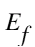
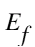
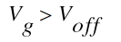
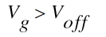

Model Equations
Physical Constants
Physical quantities in ASM-HEMT are in S.I. units unless specified otherwise.
Voltages Calculation and Pre Conditioning
Voltages Calculation

Bias Independent Calculations
Temperature Dependence

Surface Potential Calculation
Variation of surface potential with terminal gate voltage can be calculated as:
where Vf is the potential corresponding to Fermi level in triangular potential well and Vx is the voltage at the point at which surface potential is to be calculated.
Vf Calculation
Assuming the hetero junction as triangular potential well, we can get the position of sub bands by solving the Schrodinger’s equation as follows:
where  is electric field across the triangular potential well, n can take values 0,1,2..etc., m1 is effective mass of electron in triangular well and h is Planck’s constant.
is electric field across the triangular potential well, n can take values 0,1,2..etc., m1 is effective mass of electron in triangular well and h is Planck’s constant.
Considering only two lower subbands,

By solving the Poisson’s equation, we can get the relationship between electric field and sheet charge density,
Substituting (3.4.5) in (3.4.3) and (3.4.4)
Applying Fermi Dirac statistics,

where DOS is two-dimensional density of states (DOS) in GaN. (It is DOS between E0 and E1 and 2DOS for above E1). By solving the integration,
Assuming AlGaN layer is completely ionized, from charge balance condition, you get,
and d is taken as process parameter, TBAR.
Solving (3.4.6), (3.4.7), (3.4.9) and (3.4.10) equations for Vf is a difficult task as these equations are transcendental in nature.Variation of sub bands and Vf in the triangular potential well with Vg makes the calculation complicated.[17] Variation of Vf with Vg can be captured by dividing the operating region into three:
-
region is where

In this region, . Applying these conditions to equation(3.4.9),
Substituting (3.4.10) in (3.4.11):

-
 and
and
Since is higher than 
, neglecting in (3.4.9) and applying
is higher than 
, neglecting in (3.4.9) and applying ln(1 +x) = xforx < 0,
Using (3.4.3) and (3.4.10) in (3.4.13),
where,
-
 and
and 
Since > > , neglecting
in 3.4.9 and applying
, neglecting
in 3.4.9 and applying  or
orx > 0
Using (3.4.3) and (3.4.10) in (3.4.15),
Combining equations (3.4.14), (3.4.16) in 
regions,
equations (3.4.14), (3.4.16) in 
regions,
Here, and
 are functions of
are functions of  given by the interpolation expression,
given by the interpolation expression,

Combining Sub-Voff region Vf equation (3.4.12) with Vg > Voff region equation (3.4.17)

Here Vg0,eff is equal to Vg0 above Voff and is on the order of thermal voltage when Vg < Vofff and 1/Vg0,p becomes very small and equation(3.4.12) is obtained whereas in Vg > Voff, equation (3.4.17) is obtained.
But at Voff, subbands E0 and E1 are close to Ef. Ef -E0 and Ef -E1 = E0. The calculation becomes complicated. So the Householder’s numerical calculation method is used to get the accuracy upto femto volts. The final value for Ef is obtained using the iterative re-evaluation as under
Computation of p,q and r can be done as shown above. From 3.4.1,  can be determined at source end by
can be determined at source end by  = Vf +Vs. For potential at drain end, Vg0 and Vg0,eff are replaced by Vgd0 and Vgd, eff respectively and can be calculated by
= Vf +Vs. For potential at drain end, Vg0 and Vg0,eff are replaced by Vgd0 and Vgd, eff respectively and can be calculated by  d = Vf + Vd,eff.
d = Vf + Vd,eff.
Intrinsic Charge Calculation
Accurate modelling of intrinsic charges require proper assignment of channel charge to the terminals. Qg can be calculated as,


By using current continuity equation, that is, equating currents at drain end and at any point in the channel and neglecting the saturation of current we can get,

By substituting 3.5.2 in 3.5.1 and by integrating the equation with respect to  , we can get,
, we can get,
Ward-Dutton’s partitioning method is used to determine the drain and source terminal charges.

By integrating equation (3.5.2) from source to any arbitrary point in the channel, we can get x in terms of  ,
,

Substituting 3.5.7 and 3.5.2 in 3.5.4, you can get,

Drain Current Model
The drain current at any point x along the channel under the gradual channel approximation with drift diffusion model can be expressed as,

Using Qch = Cg(Vg0 -  ), taking dx to the left side and integrating from 0 to L, we get IdL and on right side, integrating with respect to d
), taking dx to the left side and integrating from 0 to L, we get IdL and on right side, integrating with respect to d from source side to the drain side potential, you get current equation as,
from source side to the drain side potential, you get current equation as,
Self Heating Model
The self-heating effect is modeled using the R-C network approach that consists of thermal resistance (RTH) and thermal capacitance (CTH). The thermal node voltage gives the rise in temperature that is added to the die temperature.
Short Channel Effects
Short channel e.ects play an important role in determining the near to accurate currents.
Velocity Saturation
Velocity saturation is modeled as:

where Ex is the lateral electric field and can be taken as (
d -  s )/L =
s )/L =  d s/L with L as the channel length of the device.
d s/L with L as the channel length of the device.

where, THESAT is a model parameter with initial value eff / VSAT · L.
DIBL
DIBL effect is included in Voff modeling.

Subthreshold Slope
Subthreshold slope tells about the leakage currents in the device. More subthreshold slope means more leakage currents. It is modeled in ASM-HEMT as follows:
cdsc = 1 + NFACTOR + (CDSCD + cdsctrap) · Vdsx (3.9.4)
Channel Length Modulation
Channel length modulation reduces the effective length of the device thereby increasing the current in it. It is modeled in ASM-HEMT as follows:
Ids,clm = Ids (1 + LAMBDA · (Vdsx - Vd,eff )) (3.9.5)
Access Region and Parasitic Resistances
Access region resistances are important in HEMTs as the distance between gate edge and source and drain edges are large and in the order of few  m. It can be modeled as bias dependent resistance.
m. It can be modeled as bias dependent resistance.
Source Region Resistance
It includes bias dependent access region resistance, source contact resistance and resistance due to traps. If RDSMOD = 1,
Drain Region Resistance
It includes bias dependent access region resistance, source contact resistance and resistance due to traps. If RDSMOD = 1,
Gate Region Conductance
Parasitic Capacitances
Access Region Capacitances
The access region capacitance particularly at the drain end of the device, which shows up in drain-source capacitance (Cds), takes the form of a bias-dependent depletion capacitance and is formulated as follows:

Overlap Capacitances
CGSO, CDSO, CGDO and CGDL are presented as model parameters to include overlap capacitance effects.
Fringing Capacitances
Model parameters, CFD and CFG are included to get the e.ects of fringing capacitances.
Trap Model
The presence of traps at the surface, in the barrier and the buffer layer are well-known in GaN HEMTs. These traps affect device characteristics significantly and give rise to the effects, such as drain-lag, gate-lag, knee walk-out, and dynamic on-resistance.
The trapping effects are modeled in ASM-HEMT model with the help of a subcircuit.
You can choose from four different trapping effects models: TRAPMOD=1, 2, 3, and 4 as described below. When TRAPMOD is set to 0, trapping effects are not modeled.
The topology for TRAPMOD=1 is shown in figure below.
Modeling trapping effects in GaN HEMTs with the voltage Vtrap in this subcircuit for TRAPMOD=1.
The trap-voltage Vtrap generated is fed back into the model and it updated parameters like the cut-off voltage, DIBL, source and drain-resistances to capture the effects of traps.
The topology for TRAPMOD=2 is shown below. In this case two different RC subcircuits are used.
Modeling trapping effects in GaN HEMTs with the voltage Vtrap1 and Vtrap2 in this subcircuit.
The trap voltages Vtrap1 and Vtrap2 update the parameters cut-off voltage, subthreshold slope, source and drain-resistances to capture the effects of traps. In this case, since the trap generation current is both a function of Vd and Vg this model is more flexible.
The topology for trap-model TRAPMOD=3 is shown below.

Modeling trapping e.ects in GaN HEMTs with the RC subcircuit.
This is recommended for modeling the GaN power device dynamic ON-resistance. Only the drain-side resistance is affected in this trap model.
Version 101.3.0 introduces Trap model 4 to describe the Drain-lag (DL) and Gate-lag (GL) phenomenon in GaN devices with most flexibility in tuning the model independently for DL and GL. In Trap model 4, the trap voltage is obtained with RC sub-circuits due to drain- and gate-bias change. The trap voltage changes key model parameters in pulsed simulation conditions only. DC and S-parameter simulations are not affected by the parameter change.
Gate Current Model
The modeling of gate current in ASM-HEMT is implemented using two diodes, one is for gate-to-source current and another is for gate-to-drain current. The current expressions are given below.

Here, IGSDIO and IGDDIO represent saturation currents of gate-source and gatedrain junction diodes, respectively. NJGS and NJGD are the diode current ideality factors and parameters KTGS and KTGD are used to capture the temperature dependence of gate saturation current.
Field Plate Model
Cross Coupling Capacitances
The two associated cross-coupling charges are evaluated in terms of the existing gate charge formulation as given below.

Qcc,cgd and Qcc,csd represents the cross-coupling charge between the FP1 - 2DEGFP2
and FP2 - 2DEGFP1 respectively. CFP2SCALE and CFP1SCALE denote dimensionless scaling factors that determine the strength of cross-coupling plateaus observed in Cgd and Csd respectively. These charges are assigned between the gate of one field-plate transistor and the source node of the other field-plate transistor.
Model representation of the Field-Plate model implementation and internal nodes is shown in the above figure with all the eight Field-Plates. These can be configured with the Field-Plate model selector switches.
Substrate Capacitance
The regional substrate charges are evaluated using the existing gate charge formulation given as:
where K is i, 1 and 2 for intrinsic transistor, FP1 transistor and FP2 transistor respectively.
CSUBSCALE,K is a dimensionless scaling factor that controls the magnitude of the regional substrate charges.
Quantum Mechanical Effects
Due to the quantum nature of the 2DEG charge at the hetero-interface, the centroid shift of the probability distribution functions needs to be accounted for in the model. The resulting increase in the barrier thickness, reduces the gate capacitance per unit area which subsequently is used in all the intrinsic charge equations.

Noise Model
Thermal and Flicker noise models are included in ASM-HEMT model.
Flicker Noise Model
The power spectral density (PSD) of the mean square fluctuations in number of occupied traps is given as:

where Nt is the concentration of traps (in cmPt factor comes from tunneling probability and EF is a modeling parameter.This in turn gives the drain current noise PSD as:
The + or - sign depends on whether a trap is neutral or charged when filled, which will increase or decrease mobility. Using (3.15.2) and (3.15.5), we get the drain current noise PSD as:
Thermal Noise Model
The noise PSD can be given as:
Where,
and NOIA, NIOIB and NOIC are parameters that include terms like NPt and Nt.
The final noise PSD can therefore be written as:

Return to top